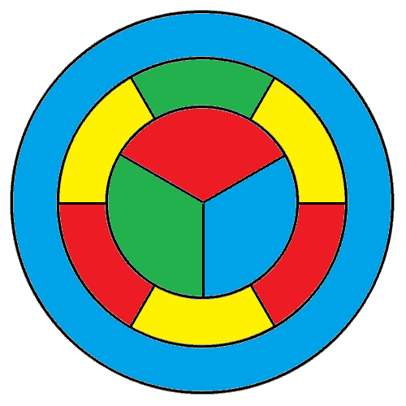
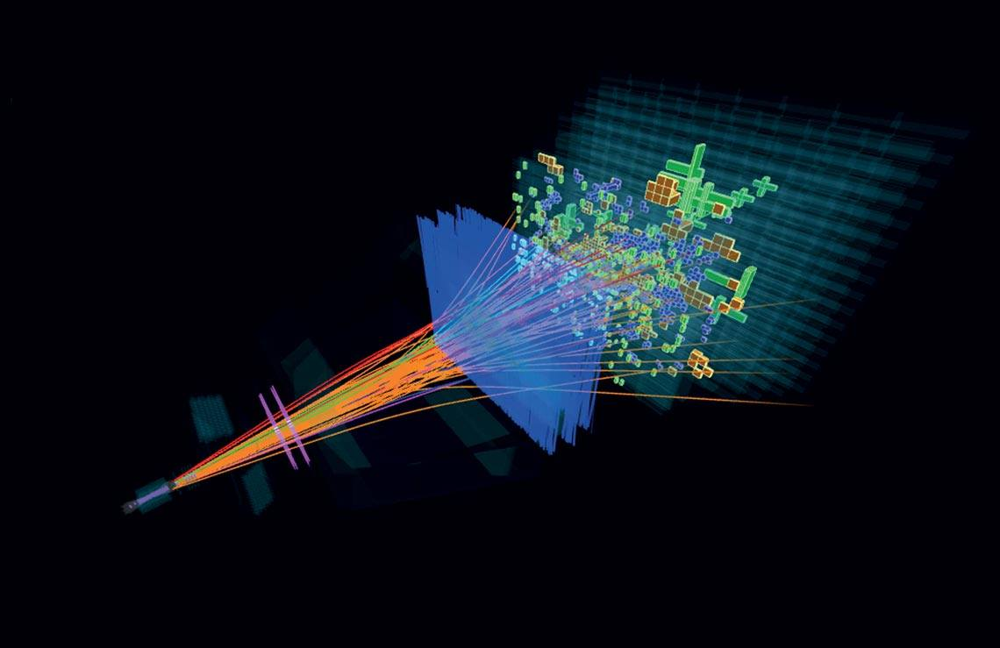
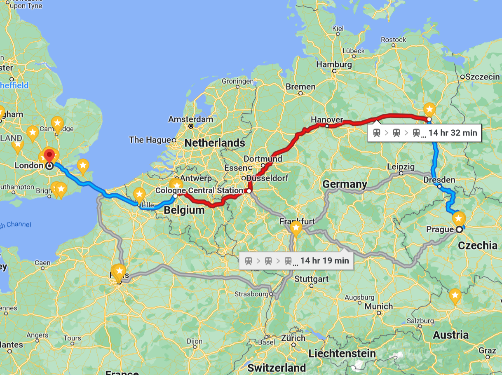

CO880: Project scope & evaluation
Tomas Petricek
email: t.petricek@kent.ac.uk
twitter: @tomaspetricek
office: S129A
{kind=link}
Science and computer science
Scientific method
1) Observation
2) Hypothesis
3) Experiment
Origins of computer science
Mathematics, science, engineering, psychology, cybernetics, military, business, linguistics, ...
Computer science
What is computer science?
Science - Theory building and hypothesis testing
Engineering - Building programs and systems
Design - Imagining ways of using computers
Business - Developing viable commercial scenarios
Your project
What is your project?
- Small contribution to the state-of-the-art
- Well planned, executed and evaluated
What is this workshop about?
- Definition: What is your project?
- Scoping: How to plan what to do?
- Evaluation: How to know it is good?
- Argumentation: How to convince us it is good?
Definition
What kind of project
are you doing?
Science, business, design, engineering
Likely a combination
of the above
Determines how to scope, evaluate and argue!
Kinds of projects (1/2)

Science
- Involves models, hypotheses, statistics
- Better machine learning algorithm
- Model of how a program behaves
Business
- Real or hypothetical product idea
- Involves market analysis
- Focus on process and execution
Kinds of projects (2/2)

Design
- Creative use of computers
- Critique of role of computers
- Game, novel design, exploration
Engineering
- Solving hard programming problem
- Can be either big or complex
- Algorithm, scale or other difficulty
Workshop: Recognizing types of projects
Scoping
How to decide
what to do?
Different for each project kind
Likely a combination!
Background research, Hypothesis, requi-
rements gathering...
Project scoping (1/2)
Science
- New and important science problem
- Trust your advisor's expertise!
- Research relevant related work
Business
- Requirements from customer
- The customer may be you!
- Captured rigorously as user stories
Project scoping (2/2)
Design
- Creative new idea!
- Well-motivated source of the idea
- Where it fits in design space
Engineering
- Research or requirements gathering
- In what sense is it hard?
- How can we solve it in a new way?
Workshop: How to define project scope
Evaluation
How do we know it is good?
Certain academic quality...
Do not just do it, think
what matters about it!
What is the claim?
Project evaluation (1/2)
Science
- Report experimental results
- Can this be compared somehow?
- Baseline, others, multiple methods
Business
- Final system is convincing
- Developed through rigorous process
- Satisfies user requirements
Project evaluation (2/2)
Design
- Your argument for the idea works
- Prototype shows it is feasible
- It explores new design space
Engineering
- You solved the hard problem
- Your solution is complete & correct
- You can explain how it works
Workshop: How to evaluate a project
Argumentation
How to show you did something good
Markers will read your dissertation, watch video, skim your code, try to run it..
Your dissertation defines the evaluation criteria!
Making an argument (1/2)
Science
- Reporting is detailed & rigorous
- Good results are a plus
- Code is not too messy!
Business
- Your product could work
- Show you built something realistic
- Show you built it systematically
Making an argument (2/2)
Design
- Having a good idea matters!
- What is interesting about your demo?
- Ideas change! Show the progression
Engineering
- Interesting sub-problems solved
- Interesting architecture or algorithms?
- Followed solid development practices!
Conclusions
Conclusions
Different kinds of computer science
Science - Define hypothesis, evaluate results
Engineering - Solve hard problem & show you did it
Design - Creative new idea, explained in context
Business - Well executed viable (hypothetical) product
CO880: Project scope & evaluation
Workshop takeaways
- Science, engineering, design, business
- Your project will likely be a combination!
- Good project does something rigorously
- Discuss ideas with your advisor!
Tomas Petricek
t.petricek@kent.ac.uk | @tomaspetricek
1 put and X in right type in google doc (TP: add some ambiguous!)
2 GAME: pick a project, write ~50 words on how you would define its scope
3 GAME: pick a project, write ~50 words on how you would evaluate it
4 GAME: pick a project, write 3 section headings of "results"
SAMPLE PROJECTS - pothole detector (science) - program equivalence checker (science) - check your data assumption (design) - hexagonal chess (design) - tfl route planning (engineering) - kent web scraper (engineering) - fashion retail (business) - student flat sharing app (business) - chatbot of some kind - educational game / 10-finger typing